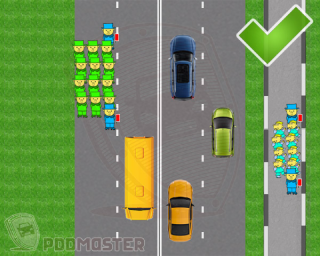
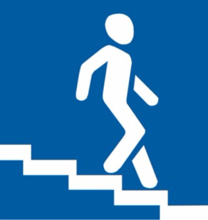

Тест
/

Наверное, каждый знает, что ПДД – это свод правил, которые регулируют права и обязанности водителей механических ТС, а также пешеходов. Кроме того, там регламентируются технические требования к транспортным средствам, обеспечивая безопасность дорожного движения.
ПДД представляют собой тонкую книжечку, в которой отражен многолетний опыт, связанный с дорожным движением. Каждый из пунктов прописан там с определенной целью, не просто так. За каждым из них стоит множество ДТП и смертей. Их вовсе не сложно прочесть, а еще лучше выучить, чтобы уберечь себя от неприятностей на дороге. В школе каждому человеку приходилось учить всяко больше, и многое в последующей жизни особо не пригодилось. А вот знание ПДД может спасти вам жизнь.
- Пешеходы должны двигаться по тротуарам или пешеходным дорожкам, а при их отсутствии - по обочинам. Пешеходы, перевозящие или переносящие громоздкие предметы, а также лица, передвигающиеся в инвалидных колясках без двигателя, могут двигаться по краю проезжей части, если их движение по тротуарам или обочинам создает помехи для других пешеходов. При отсутствии тротуаров, пешеходных дорожек или обочин, а также в случае невозможности двигаться по ним, пешеходы могут двигаться по велосипедной дорожке или идти в один ряд по краю проезжей части (на дорогах с разделительной полосой - по внешнему краю проезжей части).
При движении по краю проезжей части пешеходы должны идти навстречу движению транспортных средств.
- Движение организованных пеших колонн по проезжей части разрешается только по направлению движения транспортных средств по правой стороне не более чем по четыре человека в ряд. Спереди и сзади колонны с левой стороны должны находиться сопровождающие с красными флажками, а в темное время суток и в условиях недостаточной видимости - с включенными фонарями: спереди – белого цвета, сзади - красного. Группы детей разрешается водить только по тротуарам и пешеходным дорожкам, а при их отсутствии - и по обочинам, но лишь в светлое время суток и только в сопровождении взрослых.
- Пешеходы должны пересекать проезжую часть по пешеходным переходам, в том числе, по подземным и надземным, а при их отсутствии - на перекрестках по линии тротуаров или обочин. При отсутствии в зоне видимости перехода или перекрестка разрешается переходить дорогу под прямым углом к краю проезжей части на участках без разделительной полосы и ограждений там, где она хорошо просматривается в обе стороны.
- В местах, где движение регулируется, пешеходы должны руководствоваться сигналами регулировщика или пешеходного светофора, а при его отсутствии - транспортного светофора.
- Выйдя на проезжую часть, пешеходы не должны задерживаться или останавливаться, если это не связано с обеспечением безопасности движения. Пешеходы, не успевшие закончить переход, должны остановиться на линии, разделяющей транспортные потоки противоположных направлений. Продолжать переход можно, лишь убедившись в безопасности дальнейшего движения, и с учетом сигнала светофора (регулировщика).
- На нерегулируемых пешеходных переходах пешеходы могут выходить на проезжую часть после того, как оценят расстояние до приближающихся транспортных средств, их скорость и убедятся, что переход будет для них безопасен. При пересечении проезжей части вне пешеходного перехода пешеходы, кроме того, не должны создавать помех для движения транспортных средств и выходить из-за стоящего транспортного средства или иного препятствия, ограничивающего обзорность, не убедившись в отсутствии приближающихся транспортных средств.
- При приближении транспортных средств с включенными синим проблесковым маячком и специальным звуковым сигналом пешеходы обязаны воздержаться от перехода проезжей части, а находящиеся на ней должны уступить дорогу этим транспортным средствам и незамедлительно освободить проезжую часть.
- Ожидать маршрутное транспортное средство и такси разрешается только на приподнятых над проезжей частью посадочных площадках, а при их отсутствии - на тротуаре или обочине. В местах остановок маршрутных транспортных средств, не оборудованных приподнятыми посадочными площадками, разрешается выходить на проезжую часть для посадки в транспортное средство лишь после его остановки. После высадки необходимо, не задерживаясь, освободить проезжую часть.